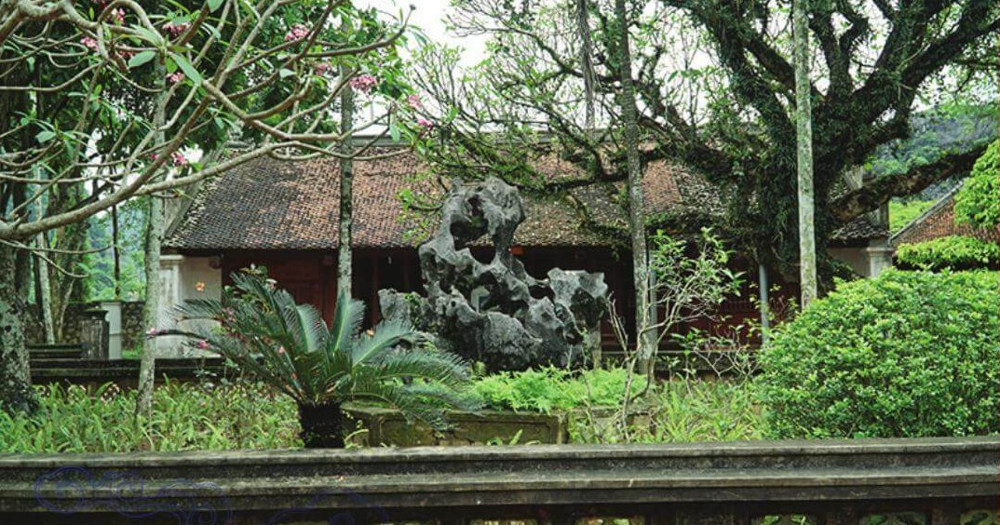

CỐ ĐÔ HOA LƯ
启圣祠

启圣祠位于丁先皇庙遗迹区的整体建筑之中，是一座具有极其特殊的精神和历史意义的建筑。
这个神圣的空间供奉着国父丁公著和国母谭贵氏——正是这两位生身父母抚养了这位民族的杰出英雄。该建筑在这个祭祀空间中的存在形成了一个完整的整体：既尊崇了建国有功者的巨大功劳，又深深缅怀了为大瞿越国第一位皇帝的事业奠定坚实基础的先人们。
在建筑方面，启圣祠带有浓厚的19世纪阮朝艺术印记，按照传统的“二”字形建造，包括前拜和后宫两座建筑。前拜是放置国父和国母汉字牌位的地方，而后宫则是安放他们神像的空间。

追溯历史根源，国父丁公著是丁先皇的生父。《大越史记全书》记载：“帝姓丁，讳部领，大黄州华闾洞人……欢州刺史丁公著之子。公著原为杨廷艺的牙将，被委任为欢州刺史，后归顺吴王，仍保留原职，直至去世。”
生前，丁公著曾是杨廷艺麾下的牙将，被委以重任担任欢州刺史，之后继续辅佐吴王。丁公著担任这些重要职务，表明他是一位具有威望的武将，直接参与了10世纪国家政治和军事的转折点。因此，丁公著出现在华闾古都的祭祀系统中，不仅是对丁先皇父亲的感恩，也是对为民族独立自主时期奠定政治、军事基础的一代先人的尊崇。
除了这位豪杰父亲，史书还铭记了国母谭贵氏的生养之恩——她是一位出生在北宁省的女子。丈夫去世后，她带着儿子丁部领回到宁平省的故乡生活。这个决定具有转折性的意义，正是从宁平这块人杰地灵的土地上，丁部领得到了庇护、抚养和成长。

在民间资料中，谭氏的形象与丁部领的少年岁月紧密相连，通过芦苇旗演习阵法、聚集伙伴的故事流传下来。这些轶事生动地刻画了一位明君早年展现出的聪明才智和英雄气概。
因此，国母谭氏的形象不仅结晶了神圣母爱的高尚价值，还代表了越南妇女在培育家庭基础、抚养人才以及参与国家和民族重大事件中扮演的重要角色。
历经岁月的洗礼和历史的沧桑，华闾古都的启圣祠永远是保留民族“饮水思源”美好传统伦理的地方，提醒着今天和未来的世代永远铭记先辈们在建国和卫国初期的巨大恩情。